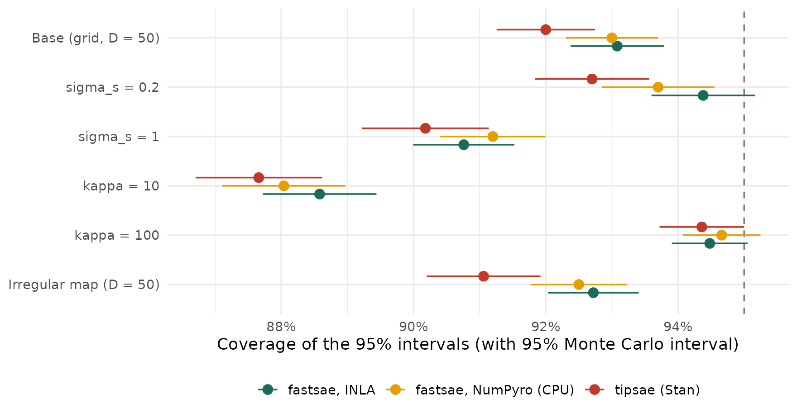
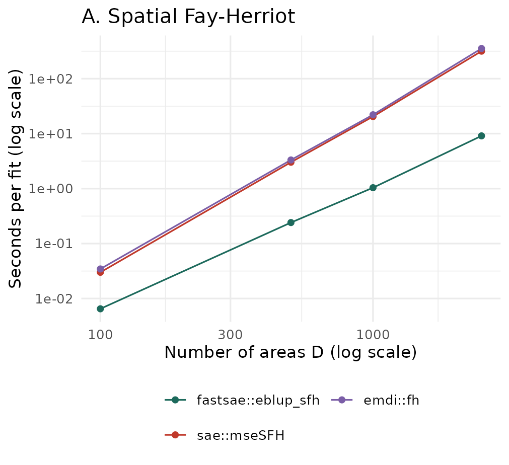
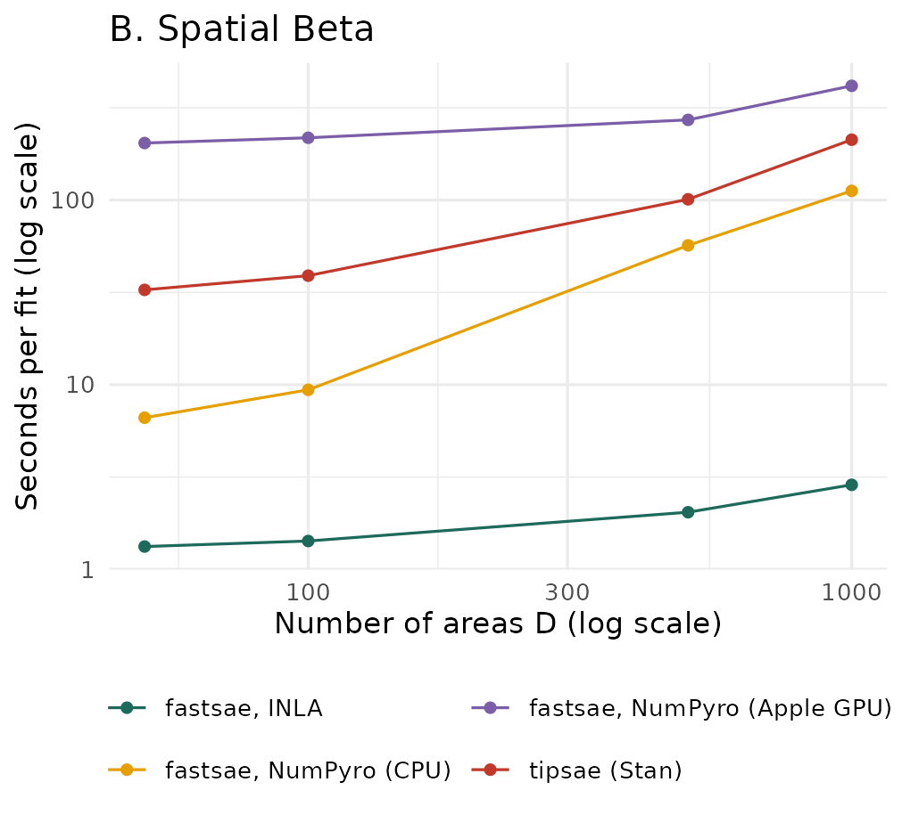

Is fastsae Better? Accuracy, Speed and Memory against sae, emdi and tipsae
Source:vignettes/articles/fastsae-evaluation.Rmd
fastsae-evaluation.RmdThis article asks whether fastsae is better than the packages it is usually compared with, for two models and in three respects: accuracy of the estimates, speed and memory. The answer is given separately for each respect. Where fastsae is not better, the article says so.
-
A. Spatial Fay-Herriot model (SAR random effects,
frequentist).
fastsae::eblup_sfh()againstsae::mseSFH()(Molina and Marhuenda, 2015) andemdi::fh(correlation = "spatial")(Kreutzmann et al., 2019). -
B. Spatial Beta model (Bayesian).
fastsae::hb_area(family = "beta")with INLA (inla_engine(), an approximation; Rue et al., 2009) and with MCMC in NumPyro (jax_engine()), againsttipsae::fit_sae()(MCMC in Stan; De Nicolò and Gardini, 2024).
Summary
| Respect | Spatial Fay-Herriot | Spatial Beta |
|---|---|---|
| Accuracy |
The same. The three packages fit the
same model by the same REML criterion and give the same estimates,
except in a few data sets near the boundary of
;
on the data sets where all fitted, their RMSEs differ by at most 4e-05.
fastsae fitted every data set (0 failures out of 4500); sae
and emdi stopped with an error 45 and 24 times. |
About the same, not uniformly better. INLA and NumPyro agree closely; tipsae is as accurate in most scenarios, less accurate with a strong spatial effect (where its chains often did not converge) and slightly more accurate with a low Beta precision. All three under-cover in the hardest scenarios. |
| Speed |
Faster. At
:
9.10 s against 316 s (sae) and 354 s
(emdi). |
INLA is much faster (2.87 s at against 212 s for tipsae). NumPyro on the CPU is 2 to 5 times faster than tipsae per fit, and up to 3 times per effective draw. NumPyro on the Apple GPU was the slowest at every size measured. |
| Memory | Lower or about the same, by a much smaller margin than the time. At : 745 MB against 886 MB and 770 MB. | Mixed. At tipsae used the least memory (69 MB, INLA 112 MB); at INLA used the least (268 MB against 1.40 GB). NumPyro needs 700-900 MB at every size, mostly for Python and JAX. |
All results come from one machine (Apple M4, 10 cores, 16 GB RAM, no NVIDIA GPU); see Machine and versions.
Design of the study
The study follows the ADEMP structure of Morris, White and Crowther (2019): aims, data-generating mechanisms, estimands, methods and performance measures.
Aims. To compare, on data with known truth, the accuracy of the area estimates and of the model parameters, and to measure the time and memory of one fit.
Data-generating mechanisms
Both studies are model-based: the covariates and the sampling variances are fixed within a scenario, and the random effects and the sampling errors are drawn anew in each replicate. Each scenario changes one factor of a base scenario. The parameter values were chosen for this study; the model forms follow the literature cited.
A. Spatial Fay-Herriot (SAR random effects; Petrucci and Salvati, 2006; Pratesi and Salvati, 2008):
with
,
,
,
,
,
,
and
the row-standardised queen contiguity matrix of a regular grid, or of
the 42 districts of the mys_proxmat data. Base scenario:
,
,
.
Others:
,
,
and the real map. 500 replicates per scenario.
B. Spatial Beta (Beta regression for proportions, Ferrari and Cribari-Neto, 2004; Beta area-level model, Janicki, 2020; random effect of Besag, York and Mollié, 1991, scaled as in Riebler et al., 2016):
where
is an intrinsic CAR (ICAR) field on the queen adjacency graph, scaled to
a geometric mean marginal variance of 1.
,
,
,
,
with
.
The sampling variance is estimated from the direct estimate,
,
as a survey would. Base scenario: a
grid
(),
,
.
Others:
,
and an irregular map (Voronoi tessellation of 50 random points). The
real map of mys_proxmat is not used here: tipsae needs
polygons, and mys_proxmat is only a matrix. 100
replicates per scenario.
Why and 100 replicates for the Beta model. The MCMC fits take about a minute each (tipsae) under parallel load, so a larger or more replicates would not fit in one overnight run; the speed and memory measurements go up to . With 100 replicates of 50 areas, the Monte Carlo standard error (MCSE) of a coverage rate is shown next to every estimate.
Estimands and methods
The estimands are the area quantities ( for the SFH model, for the Beta model) and the model parameters.
Spatial Fay-Herriot. All three packages use REML and
the analytical MSE of Prasad-Rao type. In a pilot on one data set, the
three gave the same coefficients, variance,
,
EBLUPs and MSEs up to about
.
The documented differences of fastsae (an estimate
is treated as fixed in the MSE; see ?eblup_sfh and
NEWS.md) apply only on the boundary. The 95% intervals are
.
Spatial Beta. tipsae’s
spatial_error = TRUE adds an unstructured and a scaled ICAR
effect (read from its Stan code: reffs = v + s with
s = sigma_s * s_raw / scales_ICAR). The same structure in
fastsae is spatial = "bym" (iid + scaled Besag), which is
used here, with the defaults of each package otherwise. The differences
that remain cannot be removed through the user interfaces:
| fastsae (INLA and NumPyro) | tipsae | |
|---|---|---|
| Inference | INLA: Laplace approximation. NumPyro: NUTS, 2 chains of 1,000 draws after 500 warm-up | NUTS in Stan, 4 chains of 1,000 draws after 1,000 warm-up |
| SD of the area effects | half-normal(1) on each SD | half-normal(2.5) on each SD |
| Coefficients | , intercept flat (INLA) or nearly flat (NumPyro) | on standardised covariates (tipsae scales them; its coefficients are converted back for this article) |
| Beta precision | fixed per area at , with from a first fit (the model is fitted twice) | inside the model: |
So the comparison is between what a user gets from each package with its defaults, not between two approximations of one posterior.
Performance measures
- Per replicate, averaged over the areas: bias, mean squared error, coverage of the 95% intervals and their width. The tables report the mean over replicates, with its MCSE (standard deviation over replicates divided by ), and RMSE as the square root of the mean squared error.
- Per area, over replicates: the relative RMSE (Beta model only, where the truth is positive).
- Model parameters: estimates against the true values; for the SFH model, the share of estimates of on the boundary.
- MCMC: the largest R-hat and the smallest effective sample size over the reported parameters, and divergent transitions (Vehtari et al., 2021). A fit with R-hat > 1.05, an ESS below 100 per chain, or a divergence is counted as not converged; it is kept in all accuracy measures.
- Failed fits are counted. Accuracy is compared on the replicates where every method returned a fit, so that all methods see the same data sets.
- Time and memory are measured separately, one fit per R process on an idle machine (see Speed and Memory).
Simulation procedure
For each scenario :
- Fix the design (seed ): the map and its adjacency matrix, the covariates , and the sampling variances (SFH) or the Beta precisions . These stay the same in all replicates of the scenario.
-
For each replicate
(seed
):
- Draw the random effects ( for the SFH model; and for the Beta model) and compute the true area quantities (, or ).
- Draw the direct estimates: with , or with the sampling variance computed from .
- Fit every method to this same data set. The SFH packages get the row-standardised ; for the Beta model fastsae gets the binary adjacency matrix and tipsae the polygons of the same map. The MCMC methods use seed .
- Keep, per area, the estimate and its 95% interval, and, per fit, the model parameters, the convergence diagnostics, the warnings and the time. A fit that stops with an error is kept as a failure with its error message.
- Summarise on the replicates where every method returned a fit: , , and the share of replicates whose interval contains , plus the per-replicate averages over the areas described above.
Intervals. For the SFH model, with the analytical MSE of each package. For the Beta model, the equal-tailed 95% posterior interval of (the 2.5% and 97.5% posterior quantiles): from INLA’s posterior marginals, from the NumPyro draws, and from the Stan summary of tipsae.
What varies between replicates. The true values change from one replicate to the next, since the random effects are redrawn: bias, RMSE and coverage are averages over realisations of the model, for a fixed design. This is a model-based simulation; the finite population article shows a design-based one, in which a fixed population is sampled repeatedly.
How it was run. The replicates were split into tasks of one scenario, one method and a block of 100 (SFH) or 25 (Beta) replicates, and six tasks ran at a time. Every replicate was saved to its own file, so an interrupted run resumes where it stopped. The times recorded in this stage were measured under that parallel load and are not used in Speed.
A. Spatial Fay-Herriot
Accuracy of the area estimates
| Scenario | Replicates (common) | RMSE (MCSE) | Coverage (MCSE) | Width | Max. RMSE diff. sae / emdi | Coverage sae / emdi | Failed fits fastsae / sae / emdi |
|---|---|---|---|---|---|---|---|
| Base (grid, D = 100, rho = 0.5) | 500 | 0.724 (0.002) | 94.6% (0.1%) | 2.810 | 1.2e-07 / 1.2e-07 | 94.6% / 94.6% | 0 / 0 / 0 |
| rho = 0.2 | 499 | 0.730 (0.003) | 94.2% (0.2%) | 2.809 | 6.7e-07 / 6.7e-07 | 94.2% / 94.2% | 0 / 1 / 0 |
| rho = 0.8 | 500 | 0.735 (0.003) | 94.7% (0.1%) | 2.862 | 2.7e-12 / 2.7e-12 | 94.7% / 94.7% | 0 / 0 / 0 |
| rho = 0.95 | 487 | 0.721 (0.003) | 94.9% (0.1%) | 2.815 | 3.2e-08 / 3.2e-08 | 94.9% / 94.9% | 0 / 13 / 12 |
| psi / sigma2 = 0.5 | 500 | 0.584 (0.002) | 94.9% (0.1%) | 2.267 | 1.3e-08 / 1.3e-08 | 94.9% / 94.9% | 0 / 0 / 0 |
| psi / sigma2 = 2 | 481 | 0.868 (0.003) | 94.0% (0.2%) | 3.351 | 1.6e-05 / 1.6e-05 | 94.2% / 94.2% | 0 / 19 / 8 |
| D = 50 | 497 | 0.739 (0.004) | 94.4% (0.2%) | 2.885 | 2.1e-07 / 2.1e-07 | 94.4% / 94.4% | 0 / 3 / 2 |
| D = 500 | 500 | 0.706 (0.001) | 94.9% (0.1%) | 2.750 | 0.0e+00 / 0.0e+00 | 94.9% / 94.9% | 0 / 0 / 0 |
| Real map (mys_proxmat, D = 42) | 491 | 0.744 (0.004) | 94.7% (0.2%) | 2.925 | 4.0e-05 / 4.0e-05 | 94.8% / 94.8% | 0 / 9 / 2 |
The RMSE, coverage and width are those of fastsae; the other two
columns show how far sae and emdi are from
them on the same data sets. Every package keeps close to the nominal 95%
in every scenario, and the estimates are the same in all but a few data
sets:
- Away from the boundary of
,
the EBLUPs and MSEs of fastsae and
saediffered by at most about , the size of the convergence tolerance of the two algorithms. - In 20 of the 4455 common data sets, the coverage differed. In 14 of
them both packages gave the same estimate
;
fastsae then treats
as fixed in the MSE (a documented difference, see
?eblup_sfh), which gives narrower intervals. In the other 6, the two packages ended at different estimates of (for example insaeand in fastsae): the restricted likelihood has more than one local maximum near the boundary, and fastsae maximises it under the constraints , . Which of the two maxima is higher was not checked.
Failed fits.
| fastsae | sae | emdi | |
|---|---|---|---|
| diff >= PRECISION: comparison is possible only for atomic and list types | 0 | 21 | 0 |
| singular system (solve() or LAPACK dgesv) | 0 | 24 | 24 |
Most failures came from solving a singular system. The others are an
error in the convergence check of the Fisher-scoring loop of
sae::eblupSFH() (diff >= PRECISION), raised
by sae itself, not by the code of this study. The failures
are concentrated in the scenarios that push
or
towards a boundary: large sampling variances, a strong correlation, few
areas, and the real map. fastsae maximises the restricted likelihood
under the constraints
,
and returned an estimate every time.
Model parameters
| Scenario | Package | True rho | Mean rho-hat (MCSE) | Mean sigma2-hat (true 1) | rho-hat on boundary | Mean beta1-hat (true 0.8) |
|---|---|---|---|---|---|---|
| Base (grid, D = 100, rho = 0.5) | fastsae | 0.50 | 0.435 (0.012) | 0.986 | 0.2% | 0.796 |
| Base (grid, D = 100, rho = 0.5) | sae | 0.50 | 0.435 (0.012) | 0.986 | 0.2% | 0.796 |
| rho = 0.2 | fastsae | 0.20 | 0.123 (0.015) | 0.946 | 1.2% | 0.800 |
| rho = 0.2 | sae | 0.20 | 0.125 (0.015) | 0.947 | 1.2% | 0.800 |
| rho = 0.8 | fastsae | 0.80 | 0.762 (0.006) | 1.010 | 0.0% | 0.789 |
| rho = 0.8 | sae | 0.80 | 0.762 (0.006) | 1.010 | 0.0% | 0.789 |
| rho = 0.95 | fastsae | 0.95 | 0.925 (0.003) | 1.020 | 2.8% | 0.812 |
| rho = 0.95 | sae | 0.95 | 0.923 (0.003) | 1.029 | 0.2% | 0.812 |
| psi / sigma2 = 0.5 | fastsae | 0.50 | 0.453 (0.009) | 0.980 | 0.0% | 0.798 |
| psi / sigma2 = 0.5 | sae | 0.50 | 0.453 (0.009) | 0.980 | 0.0% | 0.798 |
| psi / sigma2 = 2 | fastsae | 0.50 | 0.381 (0.018) | 0.950 | 3.0% | 0.801 |
| psi / sigma2 = 2 | sae | 0.50 | 0.384 (0.018) | 0.978 | 2.3% | 0.802 |
| D = 50 | fastsae | 0.50 | 0.392 (0.018) | 0.950 | 1.8% | 0.800 |
| D = 50 | sae | 0.50 | 0.395 (0.017) | 0.954 | 1.6% | 0.799 |
| D = 500 | fastsae | 0.50 | 0.489 (0.004) | 0.994 | 0.0% | 0.801 |
| D = 500 | sae | 0.50 | 0.489 (0.004) | 0.994 | 0.0% | 0.801 |
| Real map (mys_proxmat, D = 42) | fastsae | 0.50 | 0.386 (0.016) | 0.992 | 1.6% | 0.800 |
| Real map (mys_proxmat, D = 42) | sae | 0.50 | 0.383 (0.016) | 1.008 | 1.4% | 0.799 |
emdi gave the same parameters as sae and is
left out of the table. REML underestimates
,
most strongly with few areas or large sampling variances, and the bias
shrinks as
grows: this is a property of the estimator, shared by all three
packages, not of an implementation. The averages of sae
leave out its failed fits. In the 45 data sets where sae
failed, fastsae’s
was on the boundary in 20, and
was often small (median 0.41 against a true 1).
B. Spatial Beta
Accuracy of the area estimates
| Scenario | Method | RMSE (MCSE) | Mean relative RMSE | Mean abs. bias | Coverage (MCSE) | Width |
|---|---|---|---|---|---|---|
| Base (grid, D = 50) | fastsae, INLA | 0.0662 (0.0007) | 23.8% | 0.0067 | 93.1% (0.4%) | 0.246 |
| Base (grid, D = 50) | fastsae, NumPyro (CPU) | 0.0667 (0.0007) | 24.0% | 0.0082 | 93.0% (0.4%) | 0.251 |
| Base (grid, D = 50) | tipsae (Stan) | 0.0664 (0.0008) | 23.7% | 0.0113 | 92.0% (0.4%) | 0.257 |
| sigma_s = 0.2 | fastsae, INLA | 0.0527 (0.0007) | 19.0% | 0.0092 | 94.4% (0.4%) | 0.204 |
| sigma_s = 0.2 | fastsae, NumPyro (CPU) | 0.0531 (0.0007) | 19.2% | 0.0104 | 93.7% (0.4%) | 0.205 |
| sigma_s = 0.2 | tipsae (Stan) | 0.0530 (0.0007) | 19.1% | 0.0129 | 92.7% (0.4%) | 0.204 |
| sigma_s = 1 | fastsae, INLA | 0.0731 (0.0009) | 25.4% | 0.0065 | 90.8% (0.4%) | 0.251 |
| sigma_s = 1 | fastsae, NumPyro (CPU) | 0.0733 (0.0009) | 25.4% | 0.0073 | 91.2% (0.4%) | 0.258 |
| sigma_s = 1 | tipsae (Stan) | 0.0895 (0.0061) | 30.0% | 0.0170 | 90.2% (0.5%) | 0.284 |
| kappa = 10 | fastsae, INLA | 0.0962 (0.0012) | 34.4% | 0.0116 | 88.6% (0.4%) | 0.334 |
| kappa = 10 | fastsae, NumPyro (CPU) | 0.0980 (0.0012) | 34.9% | 0.0151 | 88.0% (0.5%) | 0.347 |
| kappa = 10 | tipsae (Stan) | 0.0916 (0.0011) | 32.6% | 0.0171 | 87.7% (0.5%) | 0.338 |
| kappa = 100 | fastsae, INLA | 0.0394 (0.0004) | 14.0% | 0.0026 | 94.5% (0.3%) | 0.147 |
| kappa = 100 | fastsae, NumPyro (CPU) | 0.0394 (0.0004) | 14.1% | 0.0027 | 94.7% (0.3%) | 0.148 |
| kappa = 100 | tipsae (Stan) | 0.0418 (0.0016) | 15.0% | 0.0049 | 94.4% (0.3%) | 0.154 |
| Irregular map (D = 50) | fastsae, INLA | 0.0671 (0.0009) | 24.6% | 0.0082 | 92.7% (0.3%) | 0.248 |
| Irregular map (D = 50) | fastsae, NumPyro (CPU) | 0.0677 (0.0009) | 24.8% | 0.0102 | 92.5% (0.4%) | 0.253 |
| Irregular map (D = 50) | tipsae (Stan) | 0.0682 (0.0009) | 25.2% | 0.0157 | 91.1% (0.4%) | 0.258 |

- INLA and NumPyro give nearly the same accuracy in every scenario: the approximation of INLA costs nothing measurable here.
- tipsae is as accurate as fastsae in most scenarios. With a strong spatial effect () its RMSE is clearly larger; this is also the scenario where its chains most often did not converge (next section). With a low Beta precision () its RMSE is slightly smaller than that of fastsae, possibly because it models the precision inside the model instead of fixing it from a first fit; this study cannot separate that from the prior.
- tipsae’s intervals covered the truth less often than those of fastsae with INLA in every scenario, by 0.1 to 1.7 percentage points (the Monte Carlo intervals overlap in some).
- tipsae has the largest mean absolute bias of the area estimates in every scenario, although the bias is small next to the RMSE for all methods.
- All methods under-cover when the precision is low or the spatial effect strong, by a similar amount: with , the hyperparameters are poorly determined by the data.
Model parameters
| Scenario | Method | beta1 (0.5) | beta2 (-0.4) | sigma_v (true) | sigma_s (true) |
|---|---|---|---|---|---|
| Base (grid, D = 50) | fastsae, INLA | 0.543 | -0.443 | 0.332 (0.2) | 0.531 (0.5) |
| Base (grid, D = 50) | fastsae, NumPyro (CPU) | 0.543 | -0.450 | 0.315 (0.2) | 0.533 (0.5) |
| Base (grid, D = 50) | tipsae (Stan) | 0.545 | -0.452 | 0.294 (0.2) | 0.550 (0.5) |
| sigma_s = 0.2 | fastsae, INLA | 0.525 | -0.447 | 0.258 (0.2) | 0.206 (0.2) |
| sigma_s = 0.2 | fastsae, NumPyro (CPU) | 0.522 | -0.447 | 0.236 (0.2) | 0.210 (0.2) |
| sigma_s = 0.2 | tipsae (Stan) | 0.531 | -0.460 | 0.216 (0.2) | 0.215 (0.2) |
| sigma_s = 1 | fastsae, INLA | 0.555 | -0.381 | 0.506 (0.2) | 0.916 (1) |
| sigma_s = 1 | fastsae, NumPyro (CPU) | 0.556 | -0.386 | 0.483 (0.2) | 0.931 (1) |
| sigma_s = 1 | tipsae (Stan) | 0.570 | -0.367 | 0.485 (0.2) | 0.979 (1) |
| kappa = 10 | fastsae, INLA | 0.594 | -0.495 | 0.591 (0.2) | 0.624 (0.5) |
| kappa = 10 | fastsae, NumPyro (CPU) | 0.601 | -0.501 | 0.586 (0.2) | 0.633 (0.5) |
| kappa = 10 | tipsae (Stan) | 0.561 | -0.472 | 0.486 (0.2) | 0.606 (0.5) |
| kappa = 100 | fastsae, INLA | 0.512 | -0.404 | 0.242 (0.2) | 0.473 (0.5) |
| kappa = 100 | fastsae, NumPyro (CPU) | 0.511 | -0.404 | 0.227 (0.2) | 0.476 (0.5) |
| kappa = 100 | tipsae (Stan) | 0.523 | -0.414 | 0.232 (0.2) | 0.512 (0.5) |
| Irregular map (D = 50) | fastsae, INLA | 0.546 | -0.466 | 0.395 (0.2) | 0.491 (0.5) |
| Irregular map (D = 50) | fastsae, NumPyro (CPU) | 0.548 | -0.468 | 0.386 (0.2) | 0.499 (0.5) |
| Irregular map (D = 50) | tipsae (Stan) | 0.554 | -0.466 | 0.362 (0.2) | 0.512 (0.5) |
Medians over the replicates of the posterior medians. The three methods recover the coefficients equally well. The unstructured SD is overestimated by all three, more when the precision is low: with 50 areas, it is hard to tell from the spatial effect and from the sampling noise, and its posterior is pulled towards the prior.
Convergence of the MCMC fits
| Scenario | Method | Fits | R-hat > 1.05 | ESS < 100 per chain | Any divergence | Not converged (any) | Median smallest ESS |
|---|---|---|---|---|---|---|---|
| Base (grid, D = 50) | fastsae, NumPyro (CPU) | 100 | 2 | 57 | 26 | 67 | 187 |
| Base (grid, D = 50) | tipsae (Stan) | 100 | 1 | 62 | 4 | 62 | 342 |
| sigma_s = 0.2 | fastsae, NumPyro (CPU) | 100 | 1 | 23 | 7 | 25 | 293 |
| sigma_s = 0.2 | tipsae (Stan) | 100 | 0 | 32 | 0 | 32 | 487 |
| sigma_s = 1 | fastsae, NumPyro (CPU) | 100 | 2 | 77 | 49 | 86 | 152 |
| sigma_s = 1 | tipsae (Stan) | 100 | 33 | 84 | 56 | 91 | 235 |
| kappa = 10 | fastsae, NumPyro (CPU) | 100 | 2 | 60 | 13 | 65 | 180 |
| kappa = 10 | tipsae (Stan) | 100 | 2 | 76 | 75 | 88 | 303 |
| kappa = 100 | fastsae, NumPyro (CPU) | 100 | 6 | 91 | 59 | 95 | 138 |
| kappa = 100 | tipsae (Stan) | 100 | 6 | 93 | 1 | 93 | 274 |
| Irregular map (D = 50) | fastsae, NumPyro (CPU) | 100 | 3 | 61 | 24 | 70 | 181 |
| Irregular map (D = 50) | tipsae (Stan) | 100 | 0 | 79 | 7 | 79 | 317 |
With their default settings, neither MCMC method converged
reliably by these criteria: in every scenario between a quarter
and nearly all of the fits had a too small ESS for some parameter, both
had divergent transitions in many fits (NumPyro most often with
and
,
tipsae with
and
),
and tipsae had an R-hat above 1.05 in a third of the fits with a strong
spatial effect. NumPyro’s default of 2 chains of 1,000 draws gives fewer
draws than tipsae’s 4 chains of 1,000, so its ESS is lower for that
reason alone. The defaults of both are meant for a first look; for
reported results, longer chains (for NumPyro,
jax_engine(warmup = , samples = )) and a check of the
diagnostics are needed. INLA has no such diagnostics; its accuracy above
is the check.
The two smallest ESS values are not computed in the same way: for
NumPyro it is the smallest rank-normalised bulk or tail ESS over the
hyperparameters, coefficients and area means (as reported by fastsae);
for tipsae it is the smallest n_eff of rstan
over all parameters of the Stan summary. They are comparable in size,
not exactly.
Speed
Each cell below is one R process that fits the same data set several times (two for the slowest cells, three otherwise); the first fit includes start-up costs (compilation of the JAX model, the first call of Stan), and the table shows the median of the later ones. The processes ran one after another on an otherwise idle machine. The SFH data are the base scenario on a grid of cells; the Beta data are the base scenario of the accuracy study.
| D | fastsae::eblup_sfh | sae::mseSFH | emdi::fh |
|---|---|---|---|
| 100 | 0.01 s | 0.03 s | 0.03 s |
| 500 | 0.24 s | 3.02 s | 3.32 s |
| 1,000 | 1.04 s | 20 s | 22 s |
| 2,500 | 9.10 s | 316 s | 354 s |
| D | fastsae, INLA | fastsae, NumPyro (CPU) | fastsae, NumPyro (Apple GPU) | tipsae (Stan) |
|---|---|---|---|---|
| 50 | 1.33 s | 6.63 s | 204 s | 33 s |
| 100 | 1.42 s | 9.38 s | 217 s | 39 s |
| 500 | 2.04 s | 57 s | 272 s | 101 s |
| 1,000 | 2.87 s | 112 s | 416 s | 212 s |


For the MCMC methods, the time per fit depends on the number of draws, so the time per effective draw (warm time divided by the smallest ESS of that fit) is the fairer comparison:
| D | NumPyro (CPU) | NumPyro (Apple GPU) | tipsae |
|---|---|---|---|
| 50 | 0.026 s | 0.922 s | 0.082 s |
| 100 | 0.053 s | 1.431 s | 0.134 s |
| 500 | 2.032 s | 9.812 s | 2.072 s |
| 1,000 | 3.011 s | 14.399 s | 6.975 s |
- Spatial Fay-Herriot: fastsae is faster at every size, and the gap grows with (sparse Cholesky factorisations instead of dense inverses). With a few dozen areas all three take a fraction of a second, and the difference does not matter in practice.
- Spatial Beta: INLA takes a few seconds up to . NumPyro on the CPU is faster than tipsae per fit, and per effective draw at all sizes but , where the two were about equal. On this machine the Apple GPU (Metal) was slower than the CPU at every size measured. No NVIDIA GPU was available, so CUDA was not measured.
- At , the smallest ESS of both MCMC methods with default settings was only a few dozen, so their per-fit times understate the time needed for a reliable fit.
Memory
The memory of a fit is the peak resident set size (RSS) of the R
process and all its child processes (INLA runs as a
separate program), sampled every 0.1 s, minus the peak of a process that
loads the same packages and data without fitting.
bench::mark()’s mem_alloc is not used: it
counts only memory allocated by R, so it misses INLA, Stan and JAX.
| D | fastsae::eblup_sfh | sae::mseSFH | emdi::fh |
|---|---|---|---|
| 100 | 38 MB | 50 MB | 50 MB |
| 500 | 80 MB | 153 MB | 141 MB |
| 1,000 | 140 MB | 284 MB | 231 MB |
| 2,500 | 745 MB | 886 MB | 770 MB |
| D | fastsae, INLA | fastsae, NumPyro (CPU) | fastsae, NumPyro (Apple GPU) | tipsae (Stan) |
|---|---|---|---|---|
| 50 | 112 MB | 907 MB | 726 MB | 69 MB |
| 100 | 123 MB | 837 MB | 676 MB | 181 MB |
| 500 | 168 MB | 781 MB | 722 MB | 932 MB |
| 1,000 | 268 MB | 854 MB | 730 MB | 1.40 GB |
-
Spatial Fay-Herriot: fastsae needs less memory than
saeandemdiat and 1,000; at the differences are within run-to-run noise, and at the largest its margin overemdiis small. - Spatial Beta: no method is best at every size. INLA’s memory grows slowly with ; tipsae needs little memory for small and the most at ; NumPyro’s 700-900 MB are mostly the Python interpreter and JAX, which is counted here because a user pays for it too.
Limits of the method. Peaks shorter than the 0.1 s sampling interval can be missed. Differences of a few tens of MB vary from run to run. On Apple silicon the GPU uses the same (unified) memory, which RSS does not fully show, so the Metal figures are lower bounds.
Conclusions
-
Spatial Fay-Herriot. fastsae is not more accurate
than
saeoremdi: it fits the same estimator and gives the same numbers. It is faster (12 to 35 times here for ), uses less or about the same memory, and returned a fit for every data set, wheresaeandemdistopped with an error in about 1% of all data sets (up to 4% in the hardest scenario). In a few data sets near the boundary of its estimate or its MSE differs from that ofsae, as documented. - Spatial Beta. fastsae with INLA is about as accurate as tipsae, better with a strong spatial effect and slightly worse with a low Beta precision, and 25 to 75 times faster here ( to 1,000). Its memory is not lower than tipsae’s for small . The MCMC engine of fastsae gives the same estimates as INLA and is faster than tipsae, but with default settings neither MCMC method converged reliably.
- Every conclusion holds for these scenarios, these defaults and this machine. The accuracy study uses (SFH) and (Beta), and the parameter values were chosen for this study.
Reproduce
From the package root, after R CMD INSTALL . --preclean
(the scripts use the installed fastsae):
sh benchmarks/eval/run_overnight.sh # accuracy (6 parallel processes), then speed and memory
WORKERS=4 sh benchmarks/eval/run_overnight.sh 00:00 # same, starting at midnightThe scripts are in benchmarks/eval/:
eval_common.R (scenarios, data and fits),
sim_accuracy.R (one task per scenario, method and block of
replicates, resumable) and bench_resources.R (one process
per cell). The run behind this page took about 2.7 hours for the
accuracy study and 1.7 hours for speed and memory. Seeds are fixed: the
design of scenario
uses seed
,
replicate
seed
.
Machine and versions
| Item | Value |
|---|---|
| Date | 2026-10-28 |
| Machine | Apple M4, 10 cores |
| RAM | 16 GB |
| OS | macOS Tahoe 26.6.2 |
| R | R version 4.6.1 (2026-06-24) |
| Packages | fastsae 1.0.0, sae 1.3, emdi 2.2.3, tipsae 1.0.3, INLA 26.8.7, rstan 2.32.7 |
| Python | jax 0.5.0, jaxlib 0.5.0, jax-metal 0.1.1, numpyro 0.19.0 |
| Threads | OMP_NUM_THREADS unset; INLA single-threaded (hb_area); tipsae chains one after another; NumPyro chains on the CPU |
| Settings | jax_engine() defaults: 2 chains x 1000 draws, 500 warmup; fit_sae() defaults: 4 chains x 2000 iterations (1000 warmup), chains run one after another; inla_engine() defaults; hb_area() runs INLA single-threaded; REML, analytical MSE, fastsae n_threads = 1 |
References
- Besag, J., York, J. and Mollié, A. (1991). Bayesian image restoration, with two applications in spatial statistics. Annals of the Institute of Statistical Mathematics, 43, 1–20. doi:10.1007/BF00116466
- De Nicolò, S. and Gardini, A. (2024). The R package tipsae: Tools for mapping proportions and indicators on the unit interval. Journal of Statistical Software, 108, 1–36. doi:10.18637/jss.v108.i01
- Ferrari, S. L. P. and Cribari-Neto, F. (2004). Beta regression for modelling rates and proportions. Journal of Applied Statistics, 31, 799–815. doi:10.1080/0266476042000214501
- Janicki, R. (2020). Properties of the beta regression model for small area estimation of proportions and application to estimation of poverty rates. Communications in Statistics – Theory and Methods, 49, 2264–2284. doi:10.1080/03610926.2019.1570266
- Kreutzmann, A.-K., Pannier, S., Rojas-Perilla, N., Schmid, T., Templ, M. and Tzavidis, N. (2019). The R package emdi for estimating and mapping regionally disaggregated indicators. Journal of Statistical Software, 91, 1–33. doi:10.18637/jss.v091.i07
- Molina, I. and Marhuenda, Y. (2015). sae: An R package for small area estimation. The R Journal, 7, 81–98. doi:10.32614/RJ-2015-007
- Morris, T. P., White, I. R. and Crowther, M. J. (2019). Using simulation studies to evaluate statistical methods. Statistics in Medicine, 38, 2074–2102. doi:10.1002/sim.8086
- Petrucci, A. and Salvati, N. (2006). Small area estimation for spatial correlation in watershed erosion assessment. Journal of Agricultural, Biological, and Environmental Statistics, 11, 169–182. doi:10.1198/108571106X110531
- Pratesi, M. and Salvati, N. (2008). Small area estimation: the EBLUP estimator based on spatially correlated random area effects. Statistical Methods and Applications, 17, 113–141. doi:10.1007/s10260-007-0061-9
- Riebler, A., Sørbye, S. H., Simpson, D. and Rue, H. (2016). An intuitive Bayesian spatial model for disease mapping that accounts for scaling. Statistical Methods in Medical Research, 25, 1145–1165. doi:10.1177/0962280216660421
- Rue, H., Martino, S. and Chopin, N. (2009). Approximate Bayesian inference for latent Gaussian models by using integrated nested Laplace approximations. Journal of the Royal Statistical Society Series B, 71, 319–392. doi:10.1111/j.1467-9868.2008.00700.x
- Vehtari, A., Gelman, A., Simpson, D., Carpenter, B. and Bürkner, P.-C. (2021). Rank-normalization, folding, and localization: An improved for assessing convergence of MCMC (with discussion). Bayesian Analysis, 16, 667–718. doi:10.1214/20-BA1221